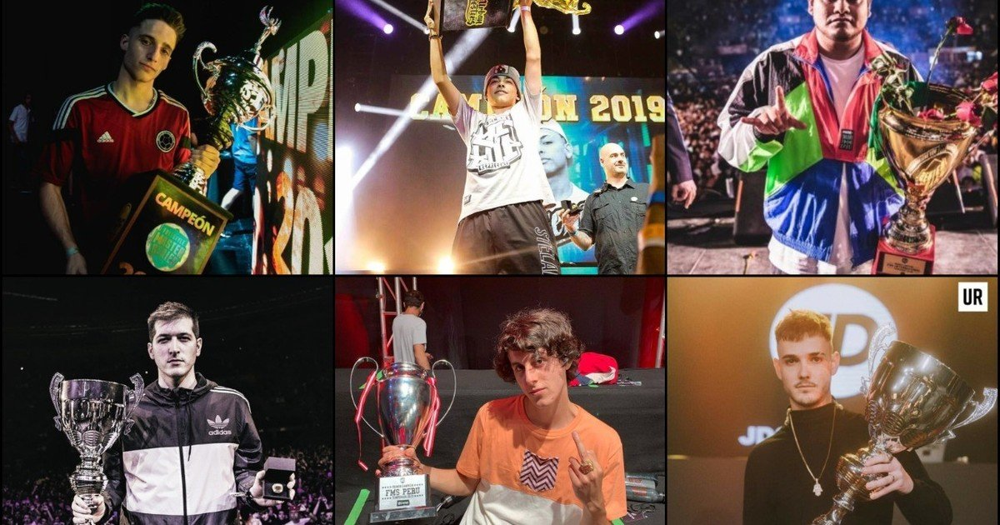

Su sistema se basa en un ranking de diez freestylers donde cada uno gana puntos en una jornada según el resultado de la batalla. Al final de la temporada la suma de esos puntos resultan en un ganador y dos descendidos.
Para ascender se necesita ser activo en la escena musical, por lo que hay un ranking de acceso a la liga, el cual funciona según con base en la popularidad y el puesto que ocupe el freestyler en las distintas competiciones del país. Ésto genera un enfrentamiento entre el octavo puesto de la liga contra el tercer puesto del ranking de ascenso.
En total se han organizado 12 ediciones de FMS (4 de España, 3 de Argentina, 2 en México, 2 en Chile y 1 en Perú).
Últimos campeones de la FMS 2020-2021 son Rapder(México), Jaze(Perú), Nitro(Chile), Benet(España), Stuart(Argentina).
